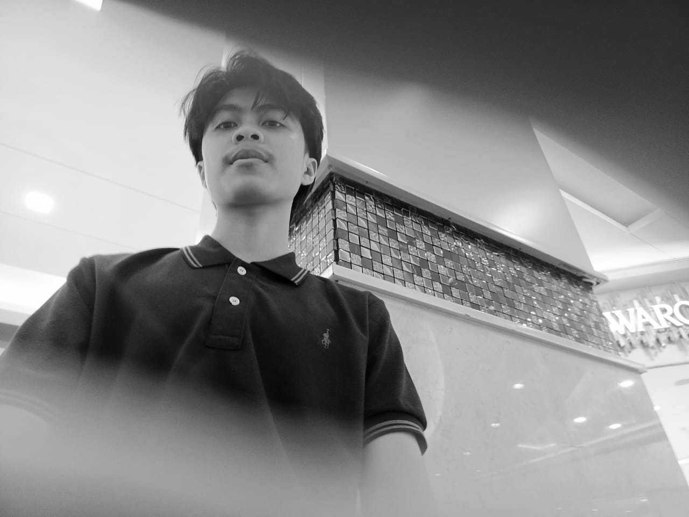

I am a 5th semester student majoring in Informatics who has a
great interest in Front-end development and UI/UX design. I was
very interested in the aesthetic and functional aspects of
creating user interfaces. My interest in Front-end development
includes a deep understanding of HTML, CSS, and JavaScript. I
also have a deep interest in UI/UX design, focusing on the
principles of responsive design, typography, and effective
layout.
Additionally, my passion for UI/UX design focuses on creating
user-friendly and visually appealing experiences. I am
particularly drawn to the principles of responsive design,
ensuring that interfaces adapt seamlessly across devices, as
well as the effective use of typography and layout to enhance
usability. I am always excited to explore new design trends and
techniques to create engaging digital experiences that meet both
aesthetic and functional goals.
Download my CV